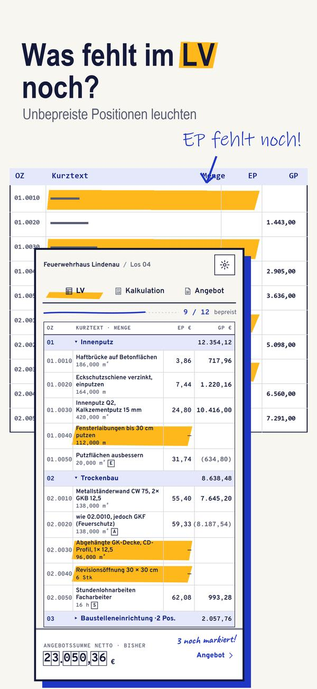
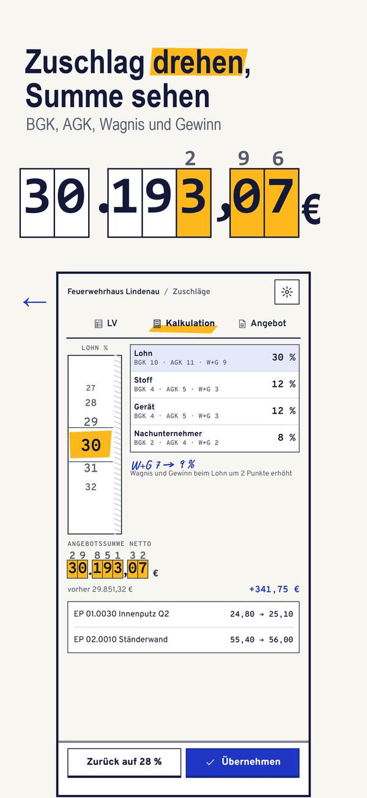
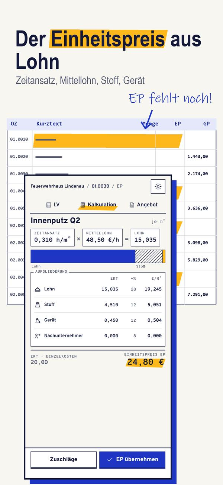

X83 bepreisen, X84 abgeben
Bieterblatt ist für Handwerksbetriebe, die auf Ausschreibungen anbieten. Sie öffnen das Leistungsverzeichnis aus Mail oder Vergabeportal und sehen es als Tabelle: Titel, Positionen, Mengen, Einheitspreise. Was noch keinen Preis hat, ist markiert. Den Einheitspreis rechnen Sie aus Zeitansatz, Mittellohn, Stoff, Gerät und Nachunternehmer, mit Ihren Zuschlägen. Am Ende prüft Bieterblatt die Angebotsdatei und schreibt sie als X84.



Bald im App Store